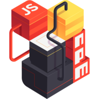
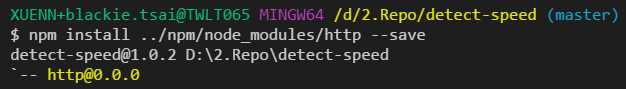
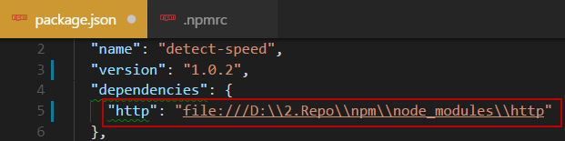
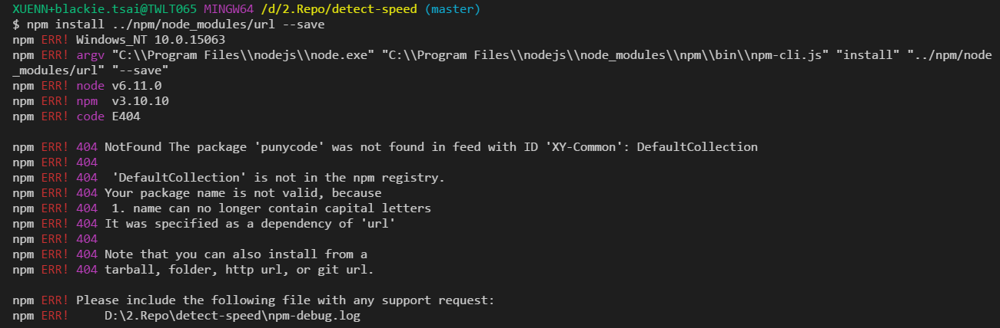

使用 npm link 指令載入本機模組

在現代 js 開發中，多少會遇到開發中的模組還沒有上傳到 npm registry 而無法使用 install 的方式載入至執行專案內中，導致開發有些相依性存在。
普遍的做法可能有是上傳一個 beta 版本的模組或是建立OS的file link(如 windows 的 mklink)，讓其他協同開發的組員可以拿到該模組的程式碼。
這次則要介紹使用 npm 的 link 指令來完美的解決這個問題
npm link
使用方式如下:
npm link (in package dir)
npm link [<@scope>/]<pkg>[@<version>]
而我們也可以透過指令別名(alias)的方式執行
npm ln (in package dir)
pm ln [<@scope>/]<pkg>[@<version>]
而一般使用會需要兩個步驟:
Step 1
先進入已經開發好的 js 套件資料夾內執行以下指令:
npm link
這步驟主要是建立全域的套件鏈結
Step 2
接者到需要使用該套件的執行專案內輸入以下指令:
npm link <package-name>
Combine to 1 step
而我們也可以透過以下一行指令將該 packge 直接載入至專案中:
npm link <package-path>
Demo: How to install package from other folder with internet
上面介紹基本 link 指令的用途與使用方法後，這邊就介紹一個不一樣的使用情境。讓我們可以透過 link 指在沒有網路的情況下還能將已下載好的套件載入至特定專案內。
確切的情境如下:
目前有一個特定資料夾存放專案A所需要的模組，而目前的環境是沒有網路的無法透過remote npm registry 提供 npm install 所需的模組安裝。
Solution 1 : use link command
這邊可以透過剛剛所介紹到的 link 來幫我們達成，這邊就不再多做說明。
Solution 2 : Install package with specific path
而我們也可以透過下面的方式將執行安裝：
npm install ../npm/node_modules/http --save

這邊也可以看到一個反效果就是package.json 這邊會導致套件的載入位置是絕對路徑

如果還有子模組 punycode 的相依性還是需要手動加入

如果有人知道如何在這方法中避免子模組也要手動加入的情況麻煩再分享一下。